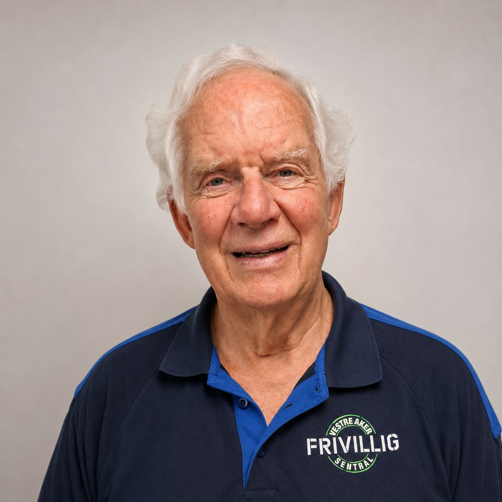

Møt Ola Ramstad
«Jeg har aldri angret et sekund», sier Ola.
19 år gammel var Ola da han forlot Skjåk for å finne lykken i Oslo. Og lykken fant han. Han begynte i Posten og fikk sin utdannelse i administrasjon og personalledelse der – en utdannelse både han og Posten fikk glede av i over 40 år, helt til han gikk av med pensjon en sommerdag i 2004. Men karrieren er ikke det han sitter igjen med som han er mest glad for. Det er uten tvil hans kone Berit, som han møtte på jobb i 1963. De giftet seg tre år senere, og gift er de fremdeles.
En ukes tid etter at Ola gikk av med pensjon, var han ute på tur med hunden sin. På vei opp Ris skolevei kom han forbi sentralen og stakk nysgjerrig hodet inn. Der fant han Gunnar Sunde og Stein Brubak, to av ildsjelene som startet sentralen i 1999. Det tok ikke lang tid før han skjønte at dette var noe han ville bruke noe av tiden sin på.
Ola har mange historier å fortelle fra sine snart åtte år som frivillig. En av de mest bemerkelsesverdige handler om et av de første oppdragene han fikk – et oppdrag som ble avsluttet tidligere denne sommeren. Han fikk en venn. Hanne* hadde ringt Stein og spurt om han ikke hadde noen som kunne besøke henne en gang iblant. Ola fikk oppdraget, og et dypt vennskap basert på gjensidig respekt utviklet seg raskt.
«Vi møttes ikke bare en gang i uken, vi snakket ofte med hverandre på telefonen også», sier Ola. «Jeg har fått like mye glede av vennskapet som hun fikk.»
Da Hanne gikk bort i sommer, var det en venn som forsvant – ikke et oppdrag eller en bruker.
Hva er det du setter mest pris på ved å være frivillig, Ola?
«Det å omgås mennesker. Jeg har også lært veldig mye – faktisk mer enn jeg har lært i hele mitt yrkesliv. Jeg har opplevd bydelen på sitt beste og sitt verste. Dessuten er takknemligheten man møter, helt fantastisk. Ens egen selvfølelse vokser når man opplever slikt.»
Hva har du lært?
«Jeg har lært hvordan det er å bli gammel. Dessuten har jeg vært så mange ganger på hjelpemiddelsentralen at jeg har veldig god innsikt i hva man kan få der …», sier Ola med et smil. «Det er vanskelig å nevne alt man lærer når man omgås så mange, men det er veldig mye.»
Tiden begynner å løpe fra oss. Ola skal følge en dame til legen, og da kan man ikke komme for sent.
«Jeg har aldri angret et sekund», sier han før han forsvinner ut døren.
*Navnet er endret av hensyn til personvern.